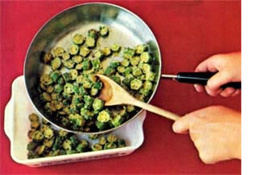
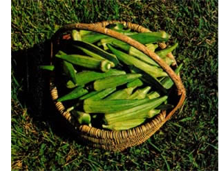

Southern cooks have long recognized okra
(or "gumbo", as we also call it) as a staple in the kitchen, and there's hardly a summer garden in the Southeast that doesn't boast at least one planting of Hibiscus esculentus.
The notion that okra can (or should) be grown only in the South, however, is both incorrect and unfortunate. Incorrect, because okra can be cultivated successfully as far north as Michigan . . . and unfortunate, because a steaming-hot bowl of shrimp gumbo would taste as delightful in any northern home as it does in my South Carolina kitchen!
And-in addition to its value as a foodbearing plant-okra (like any other hibiscus) is also a beautiful ornamental. (Many folks who can't spare room in their gardens for the 5'-tall standard varieties of okra make space in their flower borders for 3'-tall dwarfs.) Few people suspect that the burgundy-throated yellow blossoms borne by this plant give rise to a steady harvest of edible pods throughout summer and into the fall frosts.
Why not add a little variety to your vegetable menu (and beauty to your garden) next season by growing some okra? Okra culture is neither difficult nor complicated ... and the eventual rewards-in taste, nutrition, and a prettier garden-are well worth the small amount of effort involved.
Your first consideration, of course, must be soil preparation. The fast-growing, woody plants of H. esculentus require rich soil, plenty of moisture, and abundant sunlight. You'll want to work plenty of humus into the ground to ensure good drainage, since okra seeds tend to rot in mucky soil . . . and if the topsoil isn't fairly rich in nutrients, you'll want to dig manure into it, too. It isn't necessary to spade up a large area . . . one 15-foot row is enough to keep most families in okra for a summer.
Although you can prepare the soil any time during fall or spring, it's best not to plant okra (which is a heat-loving crop) until the soil is warm and all danger of frost has passed. Sow seed thinly in the row, or plant in hills 24" apart. When the seedlings are well along, thin them to stand 18" to 24" apart in the row (or one plant per hill). Afterwards, mulch the young plants heavily to conserve moisture and discourage the growth of nutrient-robbing weeds.
Okra requires tittle further attention untilabout two months after plantingblooms begin to appear. The spectacular yellow blossoms are quickly followed by small nubs which-in turn-grow rapidly into several-inchlong pods . . . pods that are susceptible to attack by bollworms, corn earworms, cabbage loopers, and stinkbugs. (Blister beetles and leaf beetles sometimes attack the plant's foliage, but seldom the pods.) These pests can usually be controlled by handpicking ... but if insect infestation becomes heavy you may wish to dust with rotenone. (Before dusting, remove all pods . . . even the nubs.)
To be truthful, though, garden pests don't really bother okra very often. In fact, okra that's been grown in rich soil and cared for by organic methods seldom attracts many harmful insects at all. A far bigger "problem" than insects is how to harvest and make use of the plants' prodigious yield of pods!
Because the nubs grow so rapidly-and because the pods quickly become woody if they're allowed to stay on the plantokra must be harvested at least every other day. (Cut the pods free of the main plant with a sharp knife.) We harvest all pods every 48 hours, leaving only the nubs to develop further.
In the kitchen, okra pods require immediate attention, since they tend to become fibrous even after they've been picked. The first order of business then is to cut the stem off each pod, being careful not to slice into the pod itself and allow juice to escape. The small pods may be boiled whole, seasoned, and served as a side dish. The larger pods (which can be stored in a moist, cool place for use the following day) can either be sliced and put into soup or stew . . . or sliced, breaded with cornmeal, and fried till crisp.
If the crop gets ahead of you (and it probably will), there are several ways to preserve okra. The easiest way is simply to freeze it. Blanch the whole, small pods for about three minutes . . . then pack 'em into containers. sea! the containers up, and store them in the freezer. (If you wind up with one partly filled container, set it in the freezer and finish filling it at the next picking.)
Another way to keep okra is to cook it up into a batch of "okra soup", a favorite Southern staple for the pantry. (This is an especially good way to dispose of large pods.) In a big kettle, combine tomatoes, thick slices of okra, and corn and/or baby lima beans, in whatever proportions you wish. Add a teaspoon of salt per quart of soup, and a few sliced onions if desired. Cook till the vegetables are tender, pour into sterilized jars, and seal. This soup makes a tasty accompaniment to rice . . . and-with the addition of meat stock and potatoes, noodles, or rice-it becomes a hearty main dish itself. (Serve the soup with plenty of unsweetened cornbread, if you wish to maintain the Southern tradition.)
A third way to deal with an okra surplus is to pickle the pods. Substitute okra for beans in your favorite "dilly bean" recipe ... combine the pods with pickled hot peppers ... or use the following recipe: Pack three and a half pounds of okra into hot, sterilized jars. Make a brine consisting of one pint of white distilled vinegar, one quart of water, one-third cup of salt, and two teaspoons of dill seed. Bring the brine to a boil, then pour the hot solution over the okra, leaving 112" of air space in the lop of each jar. Finally, seal the jars, process them for 10 minutes in a boiling water bath, and store them for several weeks before opening.
Then too, you can always dry your okra. This method of preservation does cut okra's Vitamin A content in half, but it leaves intact appreciable amounts of calcium, phosphorus, and iron. Dried okra seeds can be shelled and cooked like dried beans or peas . . . or they can even be ground up and used as a coffee substitute.
Good flavor, good nutrition, tremendous yields, and spectacular flowers ... you get it all when you grow Hibiscus esculentus (plain ole okra), whether you live in Michigan or Louisiana, or somewhere in between!
|
 |
 |
|